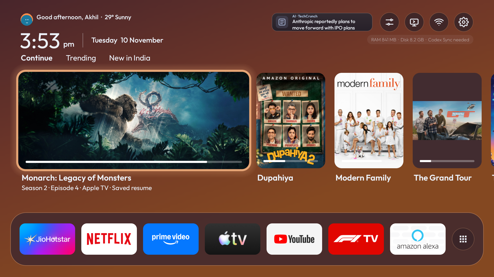

01 / HOMEA home with
A home with
some breathing room.
Continue Watching, your app dock, and dark sky colours that shift with the day. Keep useful sections and hide the rest.
A FRESH START FOR ANDROID TV
Your apps. The next episode.
And the next Grand Prix.
A lighter, quieter home screen for the TV you already own.

Actual test-TV screenshot · build 70 · Android TV 10
LESS SCROLLING. BETTER EVENINGS.
Familiar apps, a cleaner layout, and useful things to come home to.
Continue Watching, your app dock, and dark sky colours that shift with the day. Keep useful sections and hide the rest.
Continue Watching comes first. Choose the original languages for recommendations and new releases. Keep Continue Watching in any language, with an optional YouTube toggle.
Local profiles remember your name, avatar and content languages. Catalog lookups use your own TMDB key.
Real driver portraits, team logos, one race countdown, published session results, and championship points—together in a mixed-size dashboard.
Use an Android TV or Google TV running Android 8.0 or newer that allows APK installation.
Sign in to this site on an Android phone and download the APK.
Open Send Files to TV on the phone and TV. Put both on the same Wi-Fi and send the APK. A USB drive and a TV file manager also work.
Open the APK on the TV. If prompted, allow the app opening the file to install unknown apps. Select Install, then open Sweep TV from Apps.
A Sweep TV Downloader code requires a download link that works without sign-in. The preview currently uses the signed-in download above.
TRY THE PREVIEW
A native Android TV launcher. No account with Sweep TV. No subscription to the launcher.
Loading preview details…
Release details are loading. The newest artwork candidate still needs a physical-TV check.
SHA-256
YOUR TV STAYS YOURS
Keep the stock launcher and streaming apps installed. If you try cleanup, save the device-specific recovery file first.
THE SHORT ANSWERS
Sweep TV targets Android TV 8.0 and newer, including Google TV devices that permit sideloading. The launcher, recommendations and F1 widget were verified on a Xiaomi/Redmi MiTV-MOOQ1 running Android TV 10. Other models need individual checks.
No root is needed for the supported setup. You use your existing TV and remote. You can open the signed APK directly on the TV. Some TV models need ADB for installation or Home button setup.
Check the Android version, free storage, and the install permission for the app opening the file. If the TV blocks direct installation, see the computer steps above. If Android reports a signing conflict, check which Sweep TV build is installed and save your settings before considering removal.
Check the TV’s Home app choice and the Home button helper under Sweep TV → Finish setup. If the Accessibility switch is restricted or missing, open Finish setup for the device’s settings shortcut and use the assisted setup route if needed.
The launcher installation keeps your streaming apps. Optional cleanup is a separate, device-specific review. Package names alone aren’t enough to decide what can be disabled. The setup prompt asks for a backup and approval before cleanup.
TMDB supplies discovery, trending and new-release titles, filtered by your chosen original languages and region. Local activity can help rank picks; this does not read your private streaming-account recommendation profile. Continue Watching keeps the content you actually watch, independent of language preferences.
Yes, for catalog artwork and streaming availability. Create your own key in TMDB’s API settings and add it through the launcher’s Keys and location settings. This website never asks for the key. Streaming subscriptions remain with the services you use.
Build 71 prefers title-bearing landscape covers in Continue Watching, Trending and new-release shelves. If no suitable cover is available, it keeps the portrait poster intact. Original image bytes are cached without sharpening. These are catalog candidates, not guaranteed copies of a streaming app’s personalized artwork. Physical-TV verification of this build is pending.
Choose a local profile, circular avatar and recommendation languages. Popup settings control home sections, Continue Watching artwork and YouTube inclusion. A compact header badge rotates air-quality estimates, news and the next local holiday. Air-quality values are Open-Meteo/CAMS estimates, not AQI.in station readings. Weather and approximate location can be configured; these are not precise GPS measurements.
One Sweep TV release bundles the reviewed changes and lists its components. Selected CleanYourTV shared source was reviewed through v3.4.0; its launcher and cleanup rules were not imported wholesale. New cleanup or remote changes need a separate review. Updates are managed here, not applied unattended by this website.
The preview includes schedules, race results, and championship points from Jolpica, completed practice and qualifying classifications from OpenF1, and best-effort weekend session status from ESPN’s public scoreboard. It marks cached data and never treats countdown expiry as proof that a race is live. This free-data preview does not include live timing, flags, tyre compounds or lap-by-lap classification.
Sweep TV is a personal customization based on Talkies by Raju, with setup and recovery ideas from CleanYourTV and its MIT-licensed components. It is a separate preview, not an official release of either project.